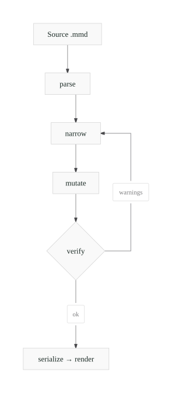
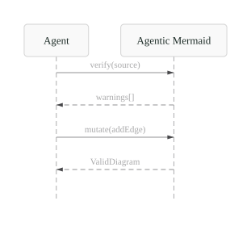
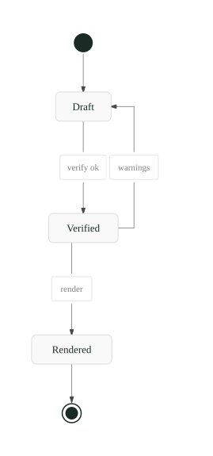

Render Mermaid to SVG, PNG, ASCII, or Unicode. Then parse, verify, and safely mutate it through a typed surface built for agents. Layout is deterministic: identical input produces identical geometry.
12 diagram families · SVG · PNG · ASCII · Unicode · JSON layout

Three ways in. Pick one and reach something working in a single screen.
Paste Mermaid, get SVG/PNG and text output, copy a share link.
Open editorClaude Code, Cursor, Codex, Gemini CLI, Copilot, Pi, OpenCode, generic MCP.
Every family renders to vector, raster, and text from one layout, byte-identical across processes.


A render-only library makes an agent regenerate the whole diagram to move one node.
Here, existing diagrams go parse → narrow → mutate → verify → serialize,
and verify returns structured warnings in three tiers plus perceptual quality metrics.
Anything it cannot model round-trips losslessly through preserved source, so nothing is silently dropped.
Run the library, the am CLI, or a local MCP server over stdio.
Code Mode execute stays local, for trusted use only.
An optional hosted MCP exposes only render, verify, describe,
and structured edits. Authless, rate-limited, no arbitrary code. Self-hosting is the recommended path.